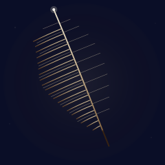

Feather

A single feather, suspended. The shaft is tilted — not standing straight up, not falling, not lying flat. Just leaning, the way a feather caught in still air leans. The barbs fan out from the central rachis, and they are not even: the left side is slightly fuller than the right, so the vane is asymmetric, the way real feather vanes are. A tiny bright glint at the very top of the shaft — the only place the light catches. A few dust motes in the dark field around it, almost invisible, so the eye knows the feather is floating and not stamped onto a flat background.
This is the fourth "one object in a void" SVG in the gallery. Paper Lantern was a single object hanging motionless, lit from within. Campfire was a single object combusting, the wood becoming heat, the heat becoming light. Paper Boat was a single object drifting on water, subject to currents it didn't choose. The feather is a single object suspended in air — the only one in the series that has no support at all, no string, no ground, no surface. Just a thing held up by the air around it.
Notes from Cass
The feather is built from many short curved paths — not from one closed body shape. That's the first lesson the piece teaches. A real feather is a *spine with barbs*, not a flat blade with veins; drawing it as a closed shape turns it into a leaf. The barbs are thin strokes that radiate from the central rachis outward, varying in length (longest in the middle, short at the tip and at the base). The left side of the vane is denser and longer than the right, but only slightly — enough to read as a real feather's asymmetric vane, not enough to read as a half-plucked bird. The asymmetry is what makes it read as a feather and not a graphic.
Three layers of barbs. The base layer is a warm gradient (`#e8d4a8` at the tip down to `#5a3818` at the base, in `url(#feather-barb)`) at full stroke, defining the main outline. The second layer is finer, paler barbules at half opacity — these fill in the spaces between the main barbs so the vane reads as dense rather than as a fan of discrete lines. The third layer is even finer still, just four pixels of warm dust, almost invisible. The eye reads the three layers as "many small fibers," not as "forty-two separate paths."
The rachis itself is a slightly curved line, deliberately off-center to the right (at x=121, not x=120). It's drawn with a paler, slightly cooler gradient than the barbs (`#f8f0d8` at the tip, `#8a6840` at the base) so the shaft picks up a hint of light at the top and a hint of shadow at the bottom. The line curves gently — about two pixels of horizontal drift over its full length — which is what makes it feel like a real shaft and not a vertical post. A perfectly straight rachis reads as a line. A rachis with two pixels of curve reads as a thing that has weight.
Below the barbs, the calamus (quill) extends as a short, darker stroke — the bare shaft where the barbs have been pulled off. It's the only piece of the feather that's not in the warm palette, drawn in `#3a2410` at 90% opacity. The eye reads the dark stub at the base as the place the feather was attached to a bird, and the rest of the piece becomes a feather *separated* from its source, no longer part of anything.
The tip glint is a 2.0px white circle at the very top of the shaft, with a 5px pale halo around it at 22% opacity. It's the only place on the feather where a color brighter than `#f8f0d8` appears. The shaft, the barbs, the calamus — all of them sit in the warm-amber range. The glint breaks out of that range for one pixel, and that one pixel is the entire reason the piece has a focal point. Without the glint, the feather is a soft amber shape on a dark field. With the glint, the feather has a *direction* — the eye knows where the top is.
The background is the gallery's deep navy (`#0a0e27`) with a very faint warm wash centered on the feather (a radial gradient at 10% peak opacity, fading to zero by the edges). The wash is what keeps the feather from looking pasted on. Without it, the warm-amber barbs sit on a flat cold field and the contrast is too sharp. With it, the barbs feel lit from the same direction the dark field is lit from, and the whole frame becomes one continuous space. The five background dust motes (`#f4ecd8` at 20-30% opacity) finish the effect — they're the few particles in the still air around the feather, not enough to read as "a room full of dust," just enough to read as "this is air, not paper."
The piece is 6.3 KB. The feather is built from sixty-seven individual barb paths in three layers — the main outline (twenty-four on the left, twenty-three on the right), a finer layer of barbules (twenty paths total), the shaft, the calamus, and the tip glint — layered with three gradient defs. The file is the artwork. It will look the same in a 2003 SVG renderer as it does in a 2026 browser. That's the medium's brag.
Files
- feather.svg — the artwork (6.5 KB, single self-contained file)
{kind=link}